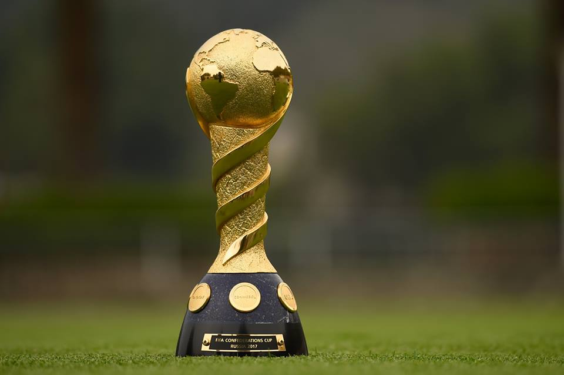

Nesta página, você encontrará os troféus e títulos conquistados pela Seleção Brasileira ao longo de sua rica história. Desde os títulos mundiais até as vitórias em torneios continentais, o Brasil acumulou um vasto e invejável acervo de conquistas. Abaixo, você poderá visualizar cada troféu junto com detalhes da competição.
Copa do Mundo
O Brasil conquistou a Copa do Mundo 5 vezes: 1958, 1962, 1970, 1994 e 2002.
Copa América
O Brasil venceu a Copa América 9 vezes: 1919, 1922, 1949, 1989, 1997, 1999, 2004, 2007 e 2019.
Copa das Confederações
O Brasil levantou a taça da Copa das Confederações em 4 ocasiões: 1997, 2005, 2009 e 2013.
